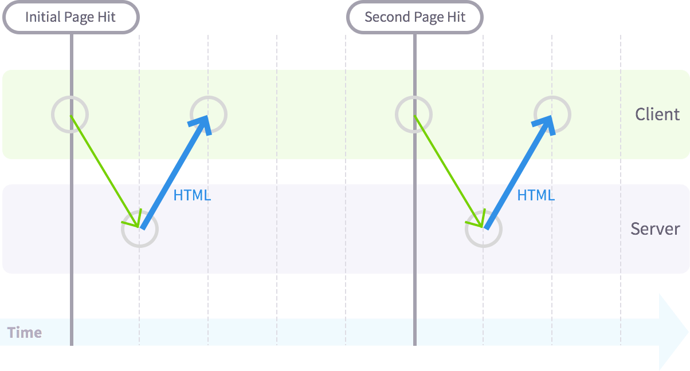
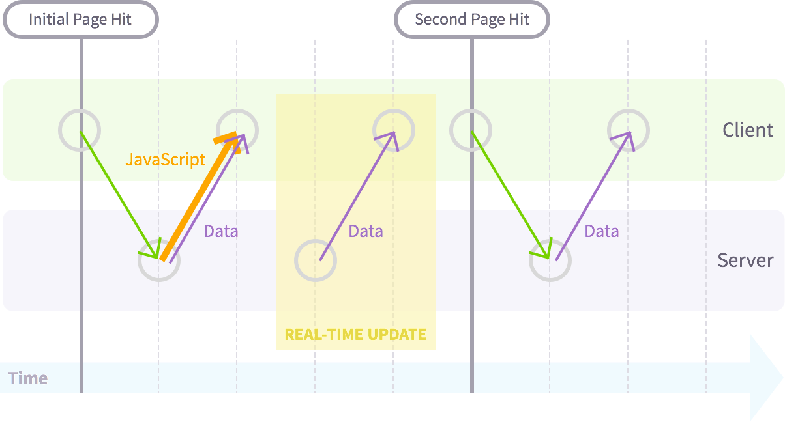
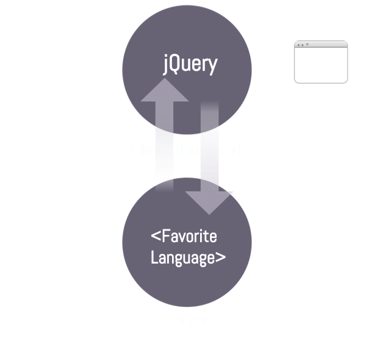
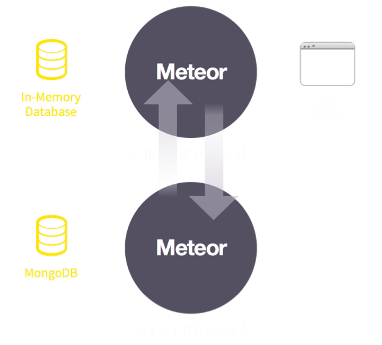
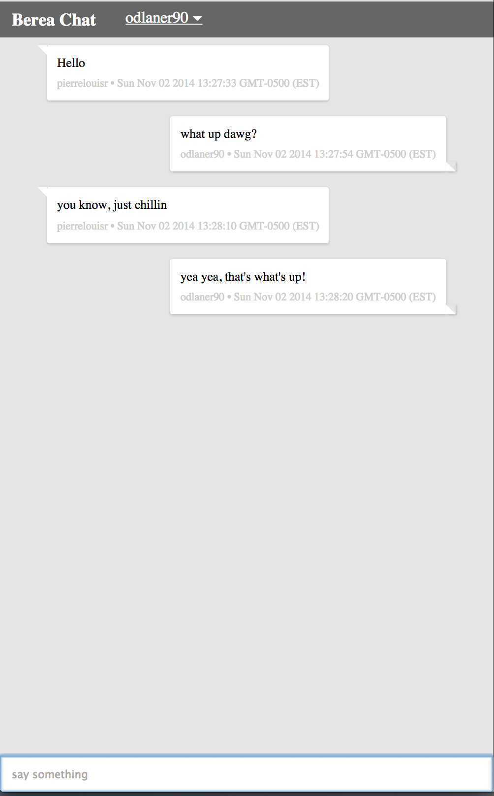

class: center, middle <img src="meteor-logo.png"> ### Build an App in 30 Min --- .left-column[ #### What is it? #### Why use it? #### Example #### Install Meteor #### Build an App #### Deploy App #### Mobile App #### Questions ] --- .left-column[ ####.current[What is it?] #### Why use it? #### Example #### Install Meteor #### Build an App #### Deploy App #### Mobile App #### Questions ] .right-column[ # Introduction - Meteor is a complete open source platform for building web and mobile apps in pure JavaScript. ] --- .left-column[ ####.current[What is it?] #### Why use it? #### Example #### Install Meteor #### Build an App #### Deploy App #### Mobile App #### Questions ] .right-column[ # Introduction - Meteor is a complete open source platform for building web and mobile apps in pure JavaScript. - A library of packages: pre-written, self-contained modules that you might need in your app. ] --- .left-column[ ####.current[What is it?] #### Why use it? #### Example #### Install Meteor #### Build an App #### Deploy App #### Mobile App #### Questions ] .right-column[ # Introduction - Meteor is a complete open source platform for building web and mobile apps in pure JavaScript. - A library of packages: pre-written, self-contained modules that you might need in your app. - Ultra-simple to use. ] --- .left-column[ #### What is it? ####.current[Why use it?] #### Example #### Install Meteor #### Build an App #### Deploy App #### Mobile App #### Questions ] .right-column[ # So, what? - Data on the Wire - Meteor doesn't send HTML over the network. The server sends data and lets the client render it. ] --- .left-column[ #### What is it? ####.current[Why use it?] #### Example #### Install Meteor #### Build an App #### Deploy App #### Mobile App #### Questions ] .right-column[ # So, what? - Data on the Wire - Meteor doesn't send HTML over the network. The server sends data and lets the client render it. <div>  <br> <small>Traditional web application</small> </div> ] --- .left-column[ #### What is it? ####.current[Why use it?] #### Example #### Install Meteor #### Build an App #### Deploy App #### Mobile App #### Questions ] .right-column[ # So, what? - Data on the Wire - Meteor doesn't send HTML over the network. The server sends data and lets the client render it. <div>  <br> <small>Meteor applications</small> </div> ] --- .left-column[ #### What is it? ####.current[Why use it?] #### Example #### Install Meteor #### Build an App #### Deploy App #### Mobile App #### Questions ] .right-column[ # So, what? - Data on the Wire - One Language. - Meteor lets you write both the client and the server parts of your application in JavaScript. ] --- .left-column[ #### What is it? ####.current[Why use it?] #### Example #### Install Meteor #### Build an App #### Deploy App #### Mobile App #### Questions ] .right-column[ # So, what? - Data on the Wire - One Language. - Database Everywhere. - You can use the same methods to access your database from the client or the server. <div class="bluebg">   </div> ] --- .left-column[ #### What is it? ####.current[Why use it?] #### Example #### Install Meteor #### Build an App #### Deploy App #### Mobile App #### Questions ] .right-column[ # So, what? - Data on the Wire - One Language. - Database Everywhere. - Latency Compensation. - On the client, Meteor pre-fetches data and simulates models to make it look like server method calls return instantly. ] --- .left-column[ #### What is it? ####.current[Why use it?] #### Example #### Install Meteor #### Build an App #### Deploy App #### Mobile App #### Questions ] .right-column[ # So, what? - Data on the Wire - One Language. - Database Everywhere. - Latency Compensation. - Full Stack Reactivity. - In Meteor, realtime is the default. All layers, from database to template, update themselves automatically when necessary. ] --- .left-column[ #### What is it? #### Why use it? ####.current[Example] #### Install Meteor #### Build an App #### Deploy App #### Mobile App #### Questions ] .right-column[ # Alright, show me! ```shell todos.js # a JavaScript file loaded on both client & server todos.html # a HTML file that defines view templates todos.css # a CSS file to define your app's styles .meteor # internal Meteor files ``` ] --- .left-column[ #### What is it? #### Why use it? ####.current[Example] - .current[todos.html] - todos.js - todos.css #### Install Meteor #### Build an App #### Deploy App #### Mobile App #### Questions ] .right-column[ # Alright, show me! ```html <!-- todos.html --> <head> <title>Todo List</title> </head> <body> <div class="container"> <header> <h1>Todo List</h1> </header> <ul> {{#each tasks}} {{> task}} {{/each}} </ul> </div> </body> <template name="task"> <li>{{text}}</li> </template> ``` ] --- .left-column[ #### What is it? #### Why use it? ####.current[Example] - todos.html - .current[todos.js] - todos.css #### Install Meteor #### Build an App #### Deploy App #### Mobile App #### Questions ] .right-column[ # Alright, show me! ```javascript // todos.js Tasks = new Mongo.Collection("tasks"); if (Meteor.isClient) { // This code only runs on the client Template.body.helpers({ tasks: function () { return Tasks.find({}); } }); } if (Meteor.isServer) { Meteor.startup(function () { // code to run server side here... }); } ``` ] --- .left-column[ #### What is it? #### Why use it? ####.current[Example] - todos.html - todos.js - .current[todos.css] #### Install Meteor #### Build an App #### Deploy App #### Mobile App #### Questions ] .right-column[ # Alright, show me! ```CSS /* CSS declarations go here */ ul { margin: 0; padding: 0; background: white; } li { position: relative; list-style: none; padding: 15px; border-bottom: #eee solid 1px; } /* More style... */ ``` ] --- .left-column[ #### What is it? #### Why use it? #### Example ####.current[Install Meteor] - .current[linux/mac] - windows #### Build an App #### Deploy App #### Mobile App #### Questions ] .right-column[ # Let's get Started Open terminal, and drop this line. ```bash curl https://install.meteor.com/ | sh ``` ] --- .left-column[ #### What is it? #### Why use it? #### Example ####.current[Install Meteor] - linux/mac - .current[windows] #### Build an App #### Deploy App #### Mobile App #### Questions ] .right-column[ # Let's get Started - The *official* installer supports Mac OS X 10.6 (Snow Leopard) and above, and Linux on x86 and x86_64 architectures. ] --- .left-column[ #### What is it? #### Why use it? #### Example ####.current[Install Meteor] - linux/mac - .current[windows] #### Build an App #### Deploy App #### Mobile App #### Questions ] .right-column[ # Let's get Started - The *official* installer supports Mac OS X 10.6 (Snow Leopard) and above, and Linux on x86 and x86_64 architectures. - win.meteor.com (version 0.8.3) ] --- .left-column[ #### What is it? #### Why use it? #### Example ####.current[Install Meteor] - linux/mac - .current[windows] #### Build an App #### Deploy App #### Mobile App #### Questions ] .right-column[ # Let's get Started - The *official* installer supports Mac OS X 10.6 (Snow Leopard) and above, and Linux on x86 and x86_64 architectures. - win.meteor.com (version 0.8.3) - or meteorpad.com (version 0.9.4) - goo.gl/p7fHeD (http://meteorpad.com/pad/cHQ2FjhPErKLzW64g) ] --- .left-column[ #### What is it? #### Why use it? #### Example ####.current[Install Meteor] - linux/mac - .current[windows] #### Build an App #### Deploy App #### Mobile App #### Questions ] .right-column[ # Let's get Started - The *official* installer supports Mac OS X 10.6 (Snow Leopard) and above, and Linux on x86 and x86_64 architectures. - win.meteor.com (version 0.8.3) - or meteorpad.com (version 0.9.4) - goo.gl/p7fHeD (http://meteorpad.com/pad/cHQ2FjhPErKLzW64g) - codeanywhere.com ] --- .left-column[ #### What is it? #### Why use it? #### Example ####.current[Install Meteor] - linux/mac - .current[windows] #### Build an App #### Deploy App #### Mobile App #### Questions ] .right-column[ # Let's get Started - The *official* installer supports Mac OS X 10.6 (Snow Leopard) and above, and Linux on x86 and x86_64 architectures. - win.meteor.com (version 0.8.3) - or meteorpad.com (version 0.9.4) - goo.gl/p7fHeD (http://meteorpad.com/pad/cHQ2FjhPErKLzW64g) - codeanywhere.com - or switch to linux ] --- .left-column[ #### What is it? #### Why use it? #### Example #### Install Meteor ####.current[Build an App] #### Deploy App #### Mobile App #### Questions ] .right-column[ # Finally, let's write some code We will be building a messaging app. .center[] <small>see code on [github](http://github.com/daltonrenaldo/chatr)</small> ] --- .left-column[ #### What is it? #### Why use it? #### Example #### Install Meteor #### Build an App ####.current[Deploy App] #### Mobile App #### Questions ] .right-column[ # Let's go live To deploy app, run this command: ```bash meteor deploy NAME_OF_APP ``` Meteor will deploy the app to <pre>NAME_OF_APP.meteor.com</pre> ] --- .left-column[ #### What is it? #### Why use it? #### Example #### Install Meteor #### Build an App #### Deploy App ####.current[Mobile App] #### Questions ] .right-column[ # What?!! I can do mobile app too? .center[YES!!] ] --- .left-column[ #### What is it? #### Why use it? #### Example #### Install Meteor #### Build an App #### Deploy App ####.current[Mobile App] - ####.current[Android] - #### iOS #### Questions ] .right-column[ # What?!! I can do mobile app too? - First Download the android sdk: ```bash meteor install-sdk android ``` ] --- .left-column[ #### What is it? #### Why use it? #### Example #### Install Meteor #### Build an App #### Deploy App ####.current[Mobile App] - ####.current[Android] - #### iOS #### Questions ] .right-column[ # What?!! I can do mobile app too? - First Download the android sdk: ```bash meteor install-sdk android ``` - Add the android platform, and accept the license terms ```bash meteor add-platform android ``` ] --- .left-column[ #### What is it? #### Why use it? #### Example #### Install Meteor #### Build an App #### Deploy App ####.current[Mobile App] - ####.current[Android] - ##### .current[emulator] - ##### device - #### iOS #### Questions ] .right-column[ # What?!! I can do mobile app too? - Run on Emulator ```bash meteor run android ``` ] --- .left-column[ #### What is it? #### Why use it? #### Example #### Install Meteor #### Build an App #### Deploy App ####.current[Mobile App] - ####.current[Android] - ##### emulator - #####.current[device] - #### iOS #### Questions ] .right-column[ # What?!! I can do mobile app too? - Connect your android device ```bash meteor run android-device ``` - To run the app and connect it to the server we deployed earlier: ```bash meteor run android-device --mobile-server app_name.meteor.com ``` ] --- .left-column[ #### What is it? #### Why use it? #### Example #### Install Meteor #### Build an App #### Deploy App ####.current[Mobile App] - #### Android - ####.current[iOS] #### Questions ] .right-column[ # What?!! I can do mobile app too? You need a mac! ```bash meteor install-sdk ios ``` Add the iOS platform and run the simulator ```bash meteor add-platform ios meteor run ios ``` ] --- .left-column[ #### What is it? #### Why use it? #### Example #### Install Meteor #### Build an App #### Deploy App #### Mobile App #### .current[Questions] ] .right-column[ # That's it! Questions? - About me: Renaldo Pierre-Louis @odlaner90 <br/> - Resources: ```bash https://github.com/daltonrenaldo/chatr https://github.com/daltonrenaldo/meteor-presentation ``` ]